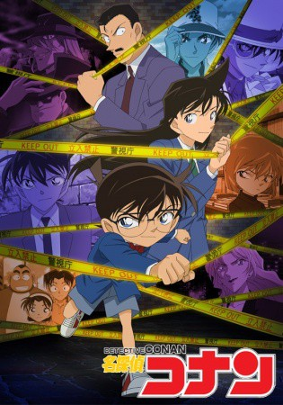

")
 
 IMDB-Wertung: 8.4 / 10
IMDB-Wertung: 8.4 / 10  Metascore:
Metascore: 
Shin'ichi Kudou ist 17 Jahre alt und wird jetzt schon als "moderner Sherlock Holmes" bezeichnet. Nach einem Date mit seiner Freundin Ran Mouri kommt er einem illegalen Deal auf die Spur, vernachlässigt dabei aber seine Deckung und wird niedergeschlagen. Ihm wird ein Gift verabreicht, das ihn töten soll. Das Gift bringt ihn jedoch nicht um, sondern verwandelt ihn in ein Kind. Von nun an nennt sich Shin'ichi selbst Edogawa Conan. Schnell muss er jedoch feststellen, dass das Leben als sechsjähriger Meisterdetektiv nicht so einfach ist - vor allem, wenn man der wahrscheinlich größten Verbrecherbande der Welt auf der Spur ist: Den Männern in Schwarz...
Jahr: 1996
Dauer: 23 Minuten
FSK: 12
Land: Japan Studio: AXNTonspuren:
Untertitel:
Auflösung: SD (640x496) Größe: 145 MB
Genre: Thriller, Drama, Komödie, Krimi, Animation/Trick, Liebe, Mystery, TV-Serie
Regisseur: Yasuichirô Yamamoto, Toshiki Hirano, Masato Sato, Mike McFarland
Drehbuch: Gosho Aoyama
Soundtrack:
Darsteller:
 Ikue Ôtani als Mitsuhiko Tsuburaya
Ikue Ôtani als Mitsuhiko Tsuburaya Jerry Jewell als Jimmy Kudo
Jerry Jewell als Jimmy Kudo Megumi Hayashibara als Ai Haibara
Megumi Hayashibara als Ai Haibara Mark Stoddard als Inspector Joseph Meguire
Mark Stoddard als Inspector Joseph Meguire Cynthia Cranz als Mitch Tennison
Cynthia Cranz als Mitch Tennison Ryô Horikawa als Heiji Hattori
Ryô Horikawa als Heiji Hattori Monica Rial als Amy Yeager
Monica Rial als Amy Yeager Dameon Clarke als George Kaminski
Dameon Clarke als George Kaminski Bill Flynn als Dr. Hershel Agasa
Bill Flynn als Dr. Hershel Agasa Sonny Strait als Additional Voices
Sonny Strait als Additional Voices Mike McFarland als George Kaminski
Mike McFarland als George Kaminski Mami Koyama als Vermouth
Mami Koyama als Vermouth Kyle Hebert als Jim Fleming
Kyle Hebert als Jim Fleming Laura Bailey als Serena Sebastian
Laura Bailey als Serena Sebastian Toshio Furukawa als Inspector Misao Yamamura
Toshio Furukawa als Inspector Misao Yamamura Sumi Shimamoto als Yukiko Kudo
Sumi Shimamoto als Yukiko Kudo Caitlin Glass als Additional Voices
Caitlin Glass als Additional Voices Mark Lancaster als Additional Voices
Mark Lancaster als Additional Voices Jamie Marchi als Additional Voices
Jamie Marchi als Additional Voices Chuck Huber als Kenneth
Chuck Huber als Kenneth Bob Carter als Isaac
Bob Carter als Isaac Grant James als Winston Cadbury
Grant James als Winston Cadbury Troy Baker als Damon
Troy Baker als Damon Travis Willingham als Additional Voices
Travis Willingham als Additional Voices Brina Palencia als Additional Voices
Brina Palencia als Additional Voices Christopher Sabat als Craig Newberry
Christopher Sabat als Craig Newberry Eric Vale als Donald Hibler
Eric Vale als Donald Hibler Vic Mignogna als Ernie Bower
Vic Mignogna als Ernie Bower Justin Cook als Masked Yaiba
Justin Cook als Masked Yaiba Lydia Mackay als Suzanna
Lydia Mackay als Suzanna Sean Teague als Michael Stewart
Sean Teague als Michael Stewart Chris Rager als Additional Voices
Chris Rager als Additional Voices Matthew Tompkins als Artie Stonewall
Matthew Tompkins als Artie Stonewall Pam Dougherty als Camiel Tarrington
Pam Dougherty als Camiel Tarrington Juli Erickson als Nonee
Juli Erickson als Nonee Bill Jenkins als Abraham Yancy
Bill Jenkins als Abraham Yancy Scarlett McAlister als Meredith
Scarlett McAlister als Meredith Stephanie Young als Isabel Nottingham
Stephanie Young als Isabel Nottingham Romi Pak als Chinatsu Miyazaki
Romi Pak als Chinatsu MiyazakiDatei: X:\Kinder Anime\Detektiv Conan\01-68\Detektiv Conan E001 Die tödliche Perlenkette.mkv seit 15.09.2017
Festplatte: Kinder-Filme+Trick
 Alle Filme aus Gruppe 'Kinder Anime\Detektiv Conan\01-68'
Alle Filme aus Gruppe 'Kinder Anime\Detektiv Conan\01-68'